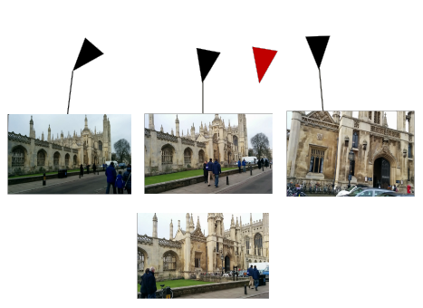
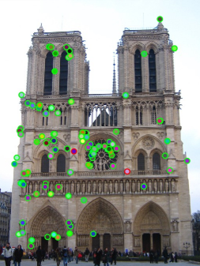
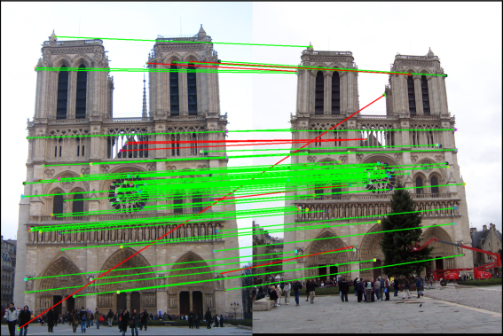
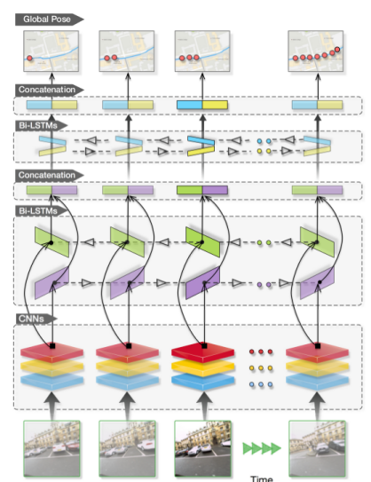
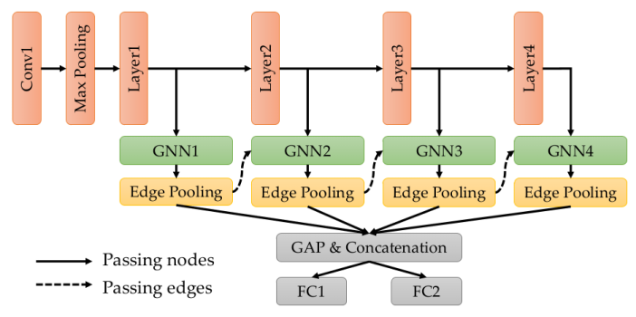
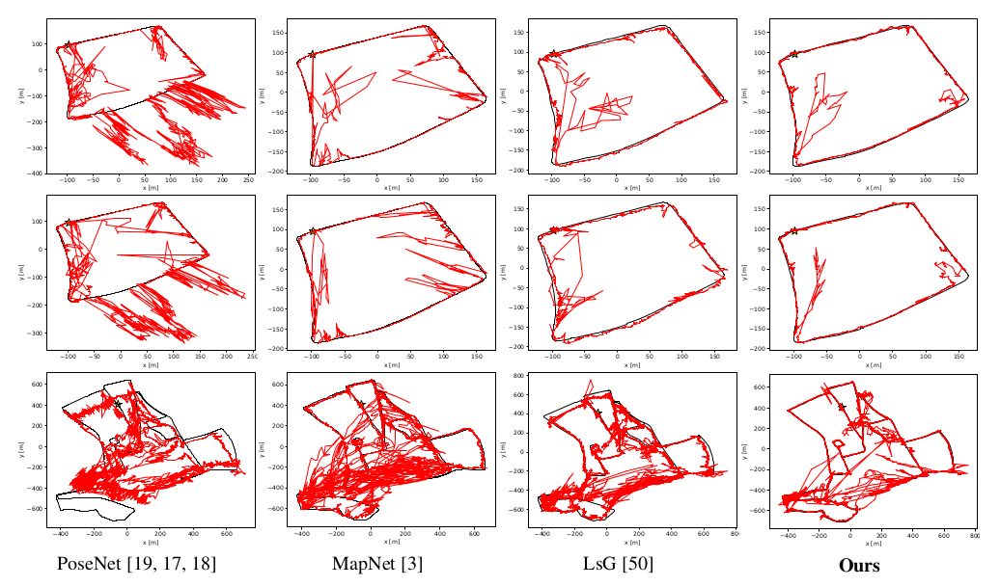
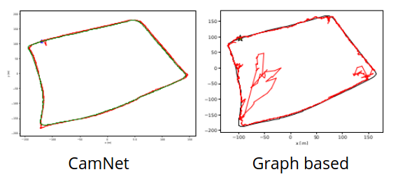

Learning Multi-view Camera Relocalization with Graph Neural Networks
Posted on Wed 13 January 2021 in Machine learning
This blog post will review the paper Learning Multi-view Camera Relocalization with Graph Neural Networks presented at CVPR 2020. I will cover related literature, explain the methodology and offer my own view at the end.
Note: This blog post has several expandable sections. They are not required for understanding the paper, but contain further information for the interested reader.
Terminology
This section clarifies a few concepts that are needed to understand camera re-localization. If you are already experienced in computer vision you can probably skip it.
Poses
A pose describes the position and orientation of an object in 3D space. It consists of a translational component \(\vec{t} \in \mathbb{R}^3\) and a orientational component, often represented as a quaternion \(q \in \mathbb{H}\).
A 3D pose can also be described by a matrix
where \(R \in \mathbb{R}^{3 \times 3}\) is a rotation matrix (so \(det\ R = 1\)) and \(\vec{t}\) is the translation vector.
The set of all possible matrices representing a valid pose in 3D is often written \(SE(3)\).
These matrices act on vectors in homogeneous coordinates, where we write a position in 3D space \(x \in \mathbb{R}^3\) as a 4 dimensional vector
This allows the translation to be expressed in the matrix as well (while in non-homogeneous coordinates it can not be expressed in a matrix since it is not linear).
Camera Re-localization
Camera re-localization is the of task finding your position in a known environment only by observation through pictures. Humans do this constantly - when you get out of the subway and want to find the exit thats closest to your destination or when you make your daily way to work from memory.
This is also a fundamental step in many computer vision tasks. To be more specific, camera re-localization is the task of finding the absolute pose \(p_q \in SE(3)\) of a query image \(i_q \in \mathbb{R}^{3 \times W \times H}\) (with width \(W\) and height \(H\)) given a database of images \(I = \{i_1, ..., i_n\}\) of which the poses \(P = \{p_1,...,p_n\}\) are already known.

This can be seen in the above image. Given the positions of the 3 images at the top, we re-localize the image at the bottom at the red camera position.
Applications
Where is this actually needed? As mentioned above, this is an important step in many computer vision pipelines, such as - Structure from Motion (SfM) - Simultaneous Localization and Mapping (SLAM)
In structure from motion, a 3D model of the environment is recovered given only a sequence of images. This works in 4 steps:
- Initialization: 2 images are used to initialize the scene, by finding the relative pose of their cameras and detecting important keypoints in both images.
- Camera localization: A new image is added to the scene using the previously located cameras and their keypoints. This can be viewed as a camera relocalization problem.
- Keypoint localization: New keypoints from the just added image are localized in the scene.
- Bundle adjustment: The previous steps often include small errors that would accumulate over time. Bundle adjustment minimizes those errors. After that the algorithm proceeds with step 2.
Simultaneous Localization and Mapping can be viewed as SfM in the real time setting on a robot. This prohibits the usage of a bundle adjustment on the whole scene, since this would typically take too long. Instead only certain keyframes are saved. To still allow correcting accumulated errors, SLAM algorithms try to detect loop closures, where the robot returns to the same location. This can also be viewed as a camera relocalization problem.
Classical approaches
Given that this is part of long standing problems in computer vision, there are of course many approaches to solving this without deep learning.
One common pipeline for this is divided into 3 steps:
1. Compute image keypoints of the query image
An example of the first step can be seen in the following picture.

Image keypoints are interesting points in the image, such as edges or corners. For each keypoint typically a keypoint descriptor is computed - a feature that uniquely describes the keypoint. There are many methods for doing this, for example SIFT, SURF (Calonder et al., 2010) or ORB (Rublee et al., 2011).
2. Find similar images in the image database
The keypoints and their descriptors are combined into an overall image descriptor - which often is a vector \(d \in \mathbb{R}^D\). This vector can be compared to the image descriptor of images from the database. Images from similar locations will have a similar vector and can thus be found by nearest neighbor search.
Approaches for computing image descriptors include Bag of Words (GalvezLópez and Tardos, 2012) and Gist features (Oliva and Torralba, 2006).
3. Estimate the relative pose given one or many similar images from the database
When we have found on ore more similar images \(i_d\) in the image database, we can use their already known poses \(p_d\) to estimate the pose of the query image.
For this we can use the keypoints from step 1, by computing keypoint correspondences, like in the following picture.

These keypoint correspondences can then be used to estimate the relative pose between the database image \(i_d\) and the query image \(i_q\), for example with the 5-point algorithm (Nister, 2004).
From classical to deep learning approaches
These steps are quite complex. Moreover many of these approaches have difficulties with changing illuminations and weather conditions, are quite memory intensive and slow and require intrinsic calibration to work right. This is why there is research interest in replacing them with "simpler" deep learning approaches.
Deep learning approaches
Deep learning approaches for camera re-localization broadly fall into two categories:
- Approaches replacing step 1 and 2. These use a deep convolutional network to compute a feature vector for the query image that can be used to find similar images in the camera database. On example for this is NetVLAD (Arandjelovic et al., 2015).
- Approaches replacing all three steps with a deep neural network. They take one or multiple query images, pass them through a network and output a global pose for each of them. Since the network is optimized on the predicted poses this is called abolute pose regression. The paper that sparked of this line of research is called PoseNet (Kendall et al., 2015).
PoseNet
PoseNet is a deep convolutional network, namely GoogLeNet (Szegedy et al., 2014), trained on predicting a single pose \(p_q\) for an input query image \(i_q\). It is trained on scenes of the 7Scenes (Glocker et al., 2013) and Cambridge Landmarks (Kendall et al., 2015) datasets. Each scene contains one or multiple training and testing sequences. It is important to mention that PoseNet, like all absolute pose regression approaches, works for a single scene only and has to be retrained from scratch to work on other scenes.
While PoseNet archieves "only" average accuracy (around 2m, 6° accuracy), it runs very fast at ~5ms per picture, which is quite impressive.
There are several improvements to PoseNet, which include MapNet (Brahmbhatt et al., 2017), VidLoc (Clark et al., 2017) and VlocNet (Valada et al., 2018) (Radwan et al., 2018).
VidLoc
The basic idea of VidLoc is to not re-localize single images but instead a whole image sequence \(i_1,...,i_n\) (a video - hence the name) at once. To do this, the images in the sequence are first preprocessed by some convolutional layers. The resulting feature maps are then passed through several bi-directional LSTM layers, which in the end output the sequence of poses \(p_1,...,p_n\) for the images.
The overall network architecture can be seen in the following figure.

By taking advantage of the sequential nature of the input, VidLoc can reach higher accuracy than PoseNet. The presented paper builds up on this.
Learning Multi-view Camera Relocalization with Graph Neural Networks
The main idea of this paper is to use Graph Neural Networks instead of LSTMs to re-localize a sequence of images. They propose a few smart approaches to learn the camera poses in a graph based manner, which I will explain in the following.
Graph Neural Networks
Graph neural networks (GNNs) operate on graphs. Given a graph \(G=(V,E)\) with a vertex set \(V=\{v_1,...,v_n\}\) and edges \(E=\{(v_i,v_j),...\}\) and some node features \(x_i\) for each node \(v_i\), they define a function \(G' = F(G)\) operating on that graph.
While they can in general change the graph structure (so add and remove edges or nodes) we are going to assume that the graph structure stays mostly unchanged. We are only interested in mapping the input node features \(x_i\) to output node features \(y_i\).
This is done with a mechanism called message passing, which consists of three steps:
- For each edge in the graph we compute a message \(m_{j \rightarrow i} = f_{message}(x_j, x_i)\)
- We aggregate the messages arriving at one node. For this we first calculate an attention \(a_{j \rightarrow i} = f_{attention}(x_j, x_i)\) and use this to sum over the messages: \(m_i = \tfrac{1}{|N(i)|} \sum_{j \in N(i)} a_{j \rightarrow i} * m_{j \rightarrow i}\). It should be noted that not all message passing networks rely on an attention calulation. This is a deliberate design choice in this paper.
- The message is used to update the node feature: \(x_i' = f_{update}(m_i,x_i)\)
The functions \(f_{message}\), \(f_{update}\) are represented by some neural network. Normally the node features are vectors in \(\mathbb{R}^D\), in this case these function can be represented by a couple of fully connected layers. GNNs typically chain a couple of these message passing layers, to allow representing more complex functions.
Application to image sequences
Now the question is how this is used to relocate a sequence of images \(i_1,...,i_n \in \mathbb{R}^{3 \times H \times W}\). First, the images are passed through some convolutional layers yielding feature maps \(i'_j \in \mathbb{R}^{C \times H' \times W'}\).
These feature maps are the node features of the graph. Now we only have to define the edges of the graph. For this the authors propose to simply initialize with the fully connected graph, that is connect every node to every other node.
Since the node features are image feature maps, the functions \(f_{message}\) and \(f_{update}\) are defined by two convolutional layers.
Attention calculation
If you wonder how the function \(f_{attention}\) is defined:
where \(vec(\circ)\) flattens the input tensor to a vector and \(cs(\circ, \circ)\) is the cosine similarity.
Edge pooling
The computational cost for computing messages on the fully connected graph with \(n\) nodes is \(\mathcal{O}(n^2)\). For this reason the edges are pruned in the later message passing layers to make the graph more sparse. For this the correlation between connected nodes is computed as
where \(cs(\circ, \circ)\) is the cosine similarity and the maxpooling is done over the spatial dimensions of the node features.
The authors argue that this not only reduces the computational cost, but also reduces redundancy and prevents overfitting.
Overall network architecture
With this knowledge we are ready to look at the overall network architecture.

The red nodes are convolutional layers, the green nodes message passing layers. The result of all message passing layers is concatenated along the channel dimension and then pooled across the spatial dimensions. Two fully connected layers predict the position \(t_i\) and orientation \(q_i\) (as a quaternion) of each input image.
Loss function
Given the predicted \(\hat{p}_i = (\hat{t}_i, \hat{q}_i)\) and ground truth pose \(p_i = (t_i, q_i)\), the loss for one image is defined as
which was first proposed in (Kendall and Cipolla, 2017).
where \(\beta_p\), \(\gamma_p\) are parameters that are optimized jointly with the network parameters and automatically balance the rotation and translation error against each other.
We can derive where this loss comes from in more detailed manner. If you want to see that click here - it is not necessary for understanding the paper though.
Normally when predicting samples \(r_i, t_i\), we just minimize the L2 loss: \(L(p_i,\hat{p}_i) = ||r_i - \hat{r}_i||_2 + ||t_i - \hat{t}_i||_2\). This corresponds to optimizing the negative log likelihood \(-log(P(r_i,t_i|x_i;W))\) (where \(W\) are the model parameters), assuming that all samples are normally distributed, eg:
The notation \(N(x|\mu,\sigma^2)\) refers to the likelihood of \(x\) when drawn from a normal distribution with mean \(\mu\) and variance \(\sigma^2\).
But this has two problems:
- It assumes that the uncertainty is the same for the translation \(t_i\) and rotation \(r_i\) This is not the case, since they are measured in different units.
- It assumes that the uncertainty is the same across all samples. This isn't necessarily true either, since there might be samples where estimating the position is very easy (and hence has low uncertainty), and others where this is a lot harder.
To solve this problem, a per-sample uncertainty \(\sigma_{r_i}^2\) and \(\sigma_{t_i}^2\) is introduced. Of course this uncertainty is not part of the ground truth data. For this reason it has to be optimized together with the model parameters.
With this the negative log-likelihood becomes:
\(L(\hat{x},x)\) is the L2 distance. In (Kendall and Cipolla, 2017) the authors found that using a L1 loss results in a higher accuracy.
We just substitute \(\beta_p = log(\sigma_{r_i}^2)\) and \(\gamma_p = log(\sigma_{t_i}^2)\), which results in a numerically stable optimization. With this we get the loss as defined above.
Additionally to this, the authors propose a graph based loss that is defined on the relative poses \(\omega_{ij}\) of the edges \(e_{ij}\) after the last edge pooling layer and results in the total loss of
The authors argue that this graph based loss induces constraints similar to those in a pose graph in SfM and SLAM applications.
Experiments
The authors evaluate their approach on the 7Scenes (Glocker et al., 2013), Cambridge (Kendall et al., 2015) and Oxford RobotCar datasets (Maddern et al., 2016). Each of them contains training and testing sequences for several distinct scenes. The model is trained on one scene at a time and then evaluated on the same scene. For evaluation the translational error \(||t_i - \hat{t}_i||_2\) and rotational error \(angle(q_i,\hat{q}_i)\) is computed for each image (where \(angle(\circ,\circ)\) gives the angle between two quaternions) and the median is reported.
The following table shows an excerpt of the results on the 7Scenes dataset, for all results please check the paper.
| Method/Scene | Chess | Fire | Heads |
|---|---|---|---|
| PoseNet | 0.32m, 8.12° | 0.47m, 14.4° | 0.29m, 12.0° |
| VidLoc | 0.18m, - | 0.26m, - | 0.14m, - |
| MapNet | 0.08m, 3.25° | 0.27m, 11.69° | 0.18m, 13.25° |
| Graph based | 0.08m, 2.82° | 0.26m, 8.94° | 0.16m, 11.41° |
The gist of the results is that the presented methods often yields SOTA accuracy or at least very close to it. One can also plot the predicted trajectories on the Oxford Robot Car dataset, which can be seen in the next picture.

The black line shows the ground truth, while the red line shows the prediction of the respective model. We can see that the predictions of the proposed methods are superior in most cases.
Ablation study
The authors also do an ablation study on some components of their network (on the Oxford Robot Car dataset).
First they study what happens when they drop the graph based loss in their optimization, so optimizing
instead of
resulting in the following performance:
| Method/Scene | LOOP1 | LOOP2 | FULL1 | FULL2 |
|---|---|---|---|---|
| Without graph loss | 10.60m, 4.54° | 10.77m, 4.12° | 20.26m, 4.78° | 39.57m, 8.05° |
| With graph loss | 9.07m, 3.15° | 9.16m, 3.22° | 19.70m, 4.46° | 39.83m, 8.17° |
we can see that the graph based loss has a positive impact on accuracy in most cases.
Next they study the influence of the amout of message passing layers used in the network. They drop some (or all) of the later layers.
| Method/Scene | LOOP1 | LOOP2 | FULL1 | FULL2 |
|---|---|---|---|---|
| With 1 MP layer | 9.07m, 3.15° | 9.16m, 3.22° | 19.70m, 4.46° | 39.83m, 8.17° |
| With 2 MP layers | 8.49m, 3.11° | 8.62m, 3.19° | 18.76m, 4.35° | 38.76m, 9.41° |
| With 3 MP layers | 8.46m, 3.02° | 7.68m, 2.78° | 17.35m, 3.59° | 36.84m, 8.22° |
| With 4 MP layers | 7.76m, 2.54° | 8.15m, 2.57° | 17.35m, 3.47° | 37.81m, 7.55° |
More layers also improve the accuracy.
Third, they study what happens, if the \(f_{message}\) and \(f_{update}\) functions are defined by simple MLPs instead of CNNs and operate on feature vectors instead of images. Both models are trained with one message passing layer and no graph based loss.
| Method/Scene | LOOP1 | LOOP2 | FULL1 | FULL2 |
|---|---|---|---|---|
| With 1 MLP layer | 23.43m, 9.75° | 24.65m, 10.55° | 34.47m, 4.07° | 58.16m, 9.73° |
| With 1 CNN layer | 10.60m, 4.54° | 10.77m, 4.12° | 20.26m, 4.78° | 39.57m, 8.05° |
We can see that the combination of GNNs with CNNs brings by far the greatest improvement.
Interestingly they do not evaluate the effect of the edge pooling layer. This would be interesting to see, since they claim that edge pooling prevents overfitting. One could alternatively also make the hypothesis that more edges would lead to a better accuracy since the update steps in the GNN can take information from more neighbors into account.
Discussion
The authors propose an interesting approach to camera re-localization. There are some interesting follow-up research questions that arise from this paper.
Network architecture
The proposed network architecture is invariant to the sequence order of the input images. If you shuffle the images around, the same fully connected graph will be initialized and since the edge pruning only relies on the node features, the same edges will be pruned as well.
If you forget about the edge pruning for a second, the proposed architecture is actually equivalent to a transformer. (Transformers are Graph Neural Networks on fully connected graphs. If you want to know more, have a look at this blog post for example).
From this two interesting questions arise
- Would this network benefit from the positional information when applied to image sequences? Given the correspondence to transformers, one could try to include a positional encoding (Vaswani et al., 2017) in the input features.
- Does this network architecture work for unordered sequences as well? Many image collections in reconstruction (Frahm et al., 2010) are mined from the internet and thus do not have a sequential nature.
From question 2 we can derive another follow up question. Many image collections mined from the internet consist of photos taken with many different cameras and thus with many different distortions and calibrations. It would be interesting to know if this method can deal with that - especially since autocalibration is not an easy problem for classical methods.
Runtime
The graph for the GNN is initialized fully connected. Thus it will contain \(\mathcal{O}(n^2)\) edges for a sequence with \(n\) images. This incurs a space and time complexity of \(\mathcal{O}(n^2)\) in the first message passing layer. This is of course not nice for longer sequences. One could try to replace the fully connected Graph attention layer with a sparse variant similar to sparse transformers (Child et al., 2019) (Choromanski et al., 2020).
CamNet
The authors cite CamNet (Ding et al., 2019), another deep learning based method for camera re-localization (although it is not an Absolute Pose Regression method). They do not include it in their evaluation. The table below comparse the performance of CamNet and GNN based method on the 7Scenes dataset:
| Method/Scene | Chess | Fire | Heads | Office | Pumpkin | Kitchen | Stairs |
|---|---|---|---|---|---|---|---|
| Graph based NN | 0.08m, 2.82° | 0.26m, 8.94° | 0.17m, 11.41° | 0.18m, 5.08° | 0.15m, 2.77° | 0.25m, 4.48° | 0.23m, 8.78° |
| CamNet | 0.04m, 1.73° | 0.03m, 1.74° | 0.05m, 1.98° | 0.04m, 1.62° | 0.04m, 1.64° | 0.04m, 1.63° | 0.04m, 1.51° |
We can also have a look at the visualization on the Oxford Robot Car dataset (only LOOP1 since CamNet doesn't offer any other visualizations).

We can clearly see that CamNet outperforms the graph based network.
Citing the paper show that the authors knew of this approach, yet they didn't include them in their final results.
Other approaches
The last section already showed that there are deep learning methods that do not do absolute pose regression but perform better for camera re-localization. There is even research (Sattler et al., 2019) that suggests that absolute pose regression can not:
- Generalize beyond the training data.
- Perform better than structured approaches.
This is motivated by the fact that these methods, while relatively fast have never outperformed classical approaches for camera re-localization (Sattler et al., 2019). This does not mean that this line of research is completely useless though.
While absolute pose regression might not necessarily be the best application for end-to-end deep learning - there are other directions where it might be feasible to integrate deep learning.
Graph based methods especially would be an interesting application for Structure from Motion (SfM) or Simultaneous Localization and Mapping (SLAM). There is some research on applying deep learning to Visual Odometry (Wang et al., 2017) Sfm (Wei et al., 2020) and SLAM (Kang et al., 2019). GNNs for these topics have only been evaluated in small use cases (Parisotto et al., 2018) and are an interesting area of further research.
Implementation
In the paper the authors claim that an implementation is provided at https://github.com/feixue94/grnet. Unfortunately the github repository at that URL provides nothing but an empty Readme file.
Bibliography
Relja Arandjelovic, Petr Gronát, Akihiko Torii, Tomás Pajdla, and Josef Sivic. Netvlad: CNN architecture for weakly supervised place recognition. CoRR, 2015. URL: http://arxiv.org/abs/1511.07247, arXiv:1511.07247. ↩
Samarth Brahmbhatt, Jinwei Gu, Kihwan Kim, James Hays, and Jan Kautz. Mapnet: geometry-aware learning of maps for camera localization. CoRR, 2017. URL: http://arxiv.org/abs/1712.03342, arXiv:1712.03342. ↩
Michael Calonder, Vincent Lepetit, Christoph Strecha, and Pascal Fua. Brief: binary robust independent elementary features. In Kostas Daniilidis, Petros Maragos, and Nikos Paragios, editors, Computer Vision – ECCV 2010, 778–792. Berlin, Heidelberg, 2010. Springer Berlin Heidelberg. ↩
Rewon Child, Scott Gray, Alec Radford, and Ilya Sutskever. Generating long sequences with sparse transformers. CoRR, 2019. URL: http://arxiv.org/abs/1904.10509, arXiv:1904.10509. ↩
Krzysztof Choromanski, Valerii Likhosherstov, David Dohan, Xingyou Song, Andreea Gane, Tamas Sarlos, Peter Hawkins, Jared Davis, Afroz Mohiuddin, Lukasz Kaiser, David Belanger, Lucy Colwell, and Adrian Weller. Rethinking attention with performers. 2020. arXiv:2009.14794. ↩
Ronald Clark, Sen Wang, Andrew Markham, Niki Trigoni, and Hongkai Wen. Vidloc: 6-dof video-clip relocalization. CoRR, 2017. URL: http://arxiv.org/abs/1702.06521, arXiv:1702.06521. ↩
Mingyu Ding, Zhe Wang, Jiankai Sun, Jianping Shi, and Ping Luo. Camnet: coarse-to-fine retrieval for camera re-localization. In Proceedings of the IEEE/CVF International Conference on Computer Vision (ICCV). October 2019. ↩
Jan-Michael Frahm, Pierre Fite-Georgel, David Gallup, Tim Johnson, Rahul Raguram, Changchang Wu, Yi-Hung Jen, Enrique Dunn, Brian Clipp, Svetlana Lazebnik, and Marc Pollefeys. Building rome on a cloudless day. In Building Rome on a Cloudless Day, volume 6314, 368–381. 07 2010. doi:10.1007/978-3-642-15561-1_27. ↩
Ben Glocker, Shahram Izadi, Jamie Shotton, and Antonio Criminisi. Real-time rgb-d camera relocalization. In International Symposium on Mixed and Augmented Reality (ISMAR). IEEE, October 2013. URL: https://www.microsoft.com/en-us/research/publication/real-time-rgb-d-camera-relocalization/. ↩ 1 2
Rong Kang, Jieqi Shi, Xueming Li, Yang Liu, and Xiao Liu. DF-SLAM: A deep-learning enhanced visual SLAM system based on deep local features. CoRR, 2019. URL: http://arxiv.org/abs/1901.07223, arXiv:1901.07223. ↩
Alex Kendall and R. Cipolla. Geometric loss functions for camera pose regression with deep learning. 2017 IEEE Conference on Computer Vision and Pattern Recognition (CVPR), pages 6555–6564, 2017. ↩ 1 2
Alex Kendall, Matthew Grimes, and Roberto Cipolla. Posenet: a convolutional network for real-time 6-dof camera relocalization. 2015. ↩ 1 2 3
Will Maddern, Geoffrey Pascoe, Chris Linegar, and Paul Newman. 1 year, 1000 km: the oxford robotcar dataset. The International Journal of Robotics Research, 36:, 11 2016. doi:10.1177/0278364916679498. ↩
A. Oliva and A. Torralba. Building the gist of a scene: the role of global image features in recognition. Progress in brain research, 155:23–36, 2006. ↩
Emilio Parisotto, Devendra Singh Chaplot, Jian Zhang, and Ruslan Salakhutdinov. Global pose estimation with an attention-based recurrent network. CoRR, 2018. URL: http://arxiv.org/abs/1802.06857, arXiv:1802.06857. ↩
Noha Radwan, Abhinav Valada, and Wolfram Burgard. Vlocnet++: deep multitask learning for semantic visual localization and odometry. CoRR, 2018. URL: http://arxiv.org/abs/1804.08366, arXiv:1804.08366. ↩
Torsten Sattler, Qunjie Zhou, Marc Pollefeys, and Laura Leal-Taixé. Understanding the limitations of cnn-based absolute camera pose regression. CoRR, 2019. URL: http://arxiv.org/abs/1903.07504, arXiv:1903.07504. ↩ 1 2
Christian Szegedy, Wei Liu, Yangqing Jia, Pierre Sermanet, Scott E. Reed, Dragomir Anguelov, Dumitru Erhan, Vincent Vanhoucke, and Andrew Rabinovich. Going deeper with convolutions. CoRR, 2014. URL: http://arxiv.org/abs/1409.4842, arXiv:1409.4842. ↩
Abhinav Valada, Noha Radwan, and Wolfram Burgard. Deep auxiliary learning for visual localization and odometry. CoRR, 2018. URL: http://arxiv.org/abs/1803.03642, arXiv:1803.03642. ↩
Ashish Vaswani, Noam Shazeer, Niki Parmar, Jakob Uszkoreit, Llion Jones, Aidan N. Gomez, Lukasz Kaiser, and Illia Polosukhin. Attention is all you need. CoRR, 2017. URL: http://arxiv.org/abs/1706.03762, arXiv:1706.03762. ↩
Sen Wang, Ronald Clark, Hongkai Wen, and Niki Trigoni. Deepvo: towards end-to-end visual odometry with deep recurrent convolutional neural networks. CoRR, 2017. URL: http://arxiv.org/abs/1709.08429, arXiv:1709.08429. ↩
Xingkui Wei, Yinda Zhang, Zhuwen Li, Yanwei Fu, and Xiangyang Xue. Deepsfm: structure from motion via deep bundle adjustment. 2020. arXiv:1912.09697. ↩
D. Galvez-López and J. D. Tardos. Bags of binary words for fast place recognition in image sequences. IEEE Transactions on Robotics, 28(5):1188–1197, 2012. ↩
D. Nister. An efficient solution to the five-point relative pose problem. IEEE Transactions on Pattern Analysis and Machine Intelligence, 26(6):756–770, 2004. doi:10.1109/TPAMI.2004.17. ↩
E. Rublee, V. Rabaud, K. Konolige, and G. Bradski. Orb: an efficient alternative to sift or surf. In 2011 International Conference on Computer Vision, volume, 2564–2571. 2011. doi:10.1109/ICCV.2011.6126544. ↩